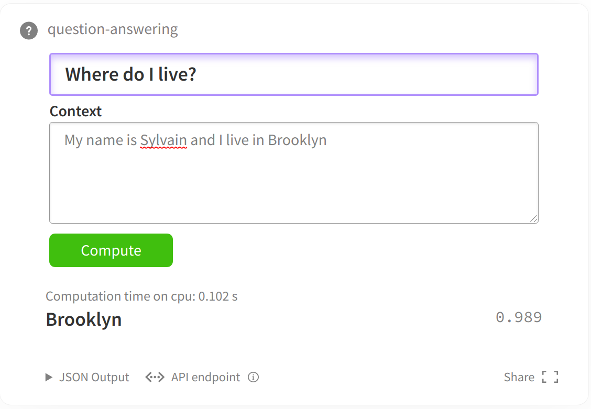

本文涉及的jupter notebook在篇章4代码库中。
建议直接使用google colab notebook打开本教程，可以快速下载相关数据集和模型。 如果您正在google的colab中打开这个notebook，您可能需要安装Transformers和🤗Datasets库。将以下命令取消注释即可安装。
# !pip install datasets transformers
在机器问答任务上微调transformer模型
在这个notebook中，我们将学习到如何微调🤗 Transformers的transformer模型来解决机器问答任务。本文主要解决的是抽取式问答任务：给定一个问题和一段文本，从这段文本中找出能回答该问题的文本片段（span）。通过使用Trainer API和dataset包，我们将轻松加载数据集，然后微调transformers。下图给出了一个简单的例子

Note: 注意：本文的问答任务是从文本中抽取答案，并不是直接生成答案！
本notebook设计的例子可以用来解决任何和SQUAD 1和SQUAD 2类似的抽取式问答任务，并且可以使用模型库Model Hub的任何模型checkpoint，只要这些模型包含了一个token classification head 和 一个fast tokenizer。关于模型和fast tokenizer的对应关系见：这个表格。
如果您的数据集和本notebook有所不同，英国只需要微调的调整就可以直接使用本notebook。当然，根据您的硬件设备（电脑内存、显卡大小），您需要合理的调整batch size大小，避免out-of-memory的错误。 Set those three parameters, then the rest of the notebook should run smoothly:
# squad_v2等于True或者False分别代表使用SQUAD v1 或者 SQUAD v2。
# 如果您使用的是其他数据集，那么True代表的是：模型可以回答“不可回答”问题，也就是部分问题不给出答案，而False则代表所有问题必须回答。
squad_v2 = False
model_checkpoint = "distilbert-base-uncased"
batch_size = 16
加载数据集
我们将会使用🤗 Datasets 库来下载数据，并且得到我们需要的评测指标（和benchmark基准进行比较）。
使用函数load_dataset和load_metric即可简单完成这两项任务。
from datasets import load_dataset, load_metric
举个例子，我们将会在这个notebook中使用SQUAD 数据集。同样，本notebook也适配所有dataset库中提供的所有问答数据集。
如果您使用的是自己的数据集（json或者csv格式），请查看Datasets 文档学习如何加载自定义的数据集。可能需要调整每列使用的名字。
# 下载数据（确保有网络）
datasets = load_dataset("squad_v2" if squad_v2 else "squad")
这个datasets对象是DatasetDict结构，训练、验证、测试分别对应这dict的一个key。
# 查看以下datasets及其属性
datasets
DatasetDict({
train: Dataset({
features: ['id', 'title', 'context', 'question', 'answers'],
num_rows: 87599
})
validation: Dataset({
features: ['id', 'title', 'context', 'question', 'answers'],
num_rows: 10570
})
})
无论是训练集、验证集还是测试集，对于每一个问答数据样本都会有“context", "question"和“answers”三个key。
我们可以使用一个下标来选择一个样本。
datasets["train"][0]
# answers代表答案
# context代表文本片段
# question代表问题
{'answers': {'answer_start': [515], 'text': ['Saint Bernadette Soubirous']},
'context': 'Architecturally, the school has a Catholic character. Atop the Main Building\'s gold dome is a golden statue of the Virgin Mary. Immediately in front of the Main Building and facing it, is a copper statue of Christ with arms upraised with the legend "Venite Ad Me Omnes". Next to the Main Building is the Basilica of the Sacred Heart. Immediately behind the basilica is the Grotto, a Marian place of prayer and reflection. It is a replica of the grotto at Lourdes, France where the Virgin Mary reputedly appeared to Saint Bernadette Soubirous in 1858. At the end of the main drive (and in a direct line that connects through 3 statues and the Gold Dome), is a simple, modern stone statue of Mary.',
'id': '5733be284776f41900661182',
'question': 'To whom did the Virgin Mary allegedly appear in 1858 in Lourdes France?',
'title': 'University_of_Notre_Dame'}
注意answers的标注。answers除了给出了文本片段里的答案文本之外，还给出了该answer所在位置（以character开始计算，上面的例子是第515位）。
为了能够进一步理解数据长什么样子，下面的函数将从数据集里随机选择几个例子进行展示。
from datasets import ClassLabel, Sequence
import random
import pandas as pd
from IPython.display import display, HTML
def show_random_elements(dataset, num_examples=10):
assert num_examples <= len(dataset), "Can't pick more elements than there are in the dataset."
picks = []
for _ in range(num_examples):
pick = random.randint(0, len(dataset)-1)
while pick in picks:
pick = random.randint(0, len(dataset)-1)
picks.append(pick)
df = pd.DataFrame(dataset[picks])
for column, typ in dataset.features.items():
if isinstance(typ, ClassLabel):
df[column] = df[column].transform(lambda i: typ.names[i])
elif isinstance(typ, Sequence) and isinstance(typ.feature, ClassLabel):
df[column] = df[column].transform(lambda x: [typ.feature.names[i] for i in x])
display(HTML(df.to_html()))
show_random_elements(datasets["train"], num_examples=2)
| answers | context | id | question | title | |
|---|---|---|---|---|---|
| 0 | {'answer_start': [185], 'text': ['diesel fuel']} | In Alberta, five bitumen upgraders produce synthetic crude oil and a variety of other products: The Suncor Energy upgrader near Fort McMurray, Alberta produces synthetic crude oil plus diesel fuel; the Syncrude Canada, Canadian Natural Resources, and Nexen upgraders near Fort McMurray produce synthetic crude oil; and the Shell Scotford Upgrader near Edmonton produces synthetic crude oil plus an intermediate feedstock for the nearby Shell Oil Refinery. A sixth upgrader, under construction in 2015 near Redwater, Alberta, will upgrade half of its crude bitumen directly to diesel fuel, with the remainder of the output being sold as feedstock to nearby oil refineries and petrochemical plants. | 571b074c9499d21900609be3 | Besides crude oil, what does the Suncor Energy plant produce? | Asphalt |
| 1 | {'answer_start': [191], 'text': ['the GIOVE satellites for the Galileo system']} | Compass-M1 is an experimental satellite launched for signal testing and validation and for the frequency filing on 14 April 2007. The role of Compass-M1 for Compass is similar to the role of the GIOVE satellites for the Galileo system. The orbit of Compass-M1 is nearly circular, has an altitude of 21,150 km and an inclination of 55.5 degrees. | 56e1161ccd28a01900c6757b | The purpose of the Compass-M1 satellite is similar to the purpose of what other satellite? | BeiDou_Navigation_Satellite_System |
Preprocessing the training data
在将数据喂入模型之前，我们需要对数据进行预处理。预处理的工具叫Tokenizer。Tokenizer首先对输入进行tokenize，然后将tokens转化为预模型中需要对应的token ID，再转化为模型需要的输入格式。
为了达到数据预处理的目的，我们使用AutoTokenizer.from_pretrained方法实例化我们的tokenizer，这样可以确保：
- 我们得到一个与预训练模型一一对应的tokenizer。
- 使用指定的模型checkpoint对应的tokenizer的时候，我们也下载了模型需要的词表库vocabulary，准确来说是tokens vocabulary。
这个被下载的tokens vocabulary会被缓存起来，从而再次使用的时候不会重新下载。
from transformers import AutoTokenizer
tokenizer = AutoTokenizer.from_pretrained(model_checkpoint)
以下代码要求tokenizer必须是transformers.PreTrainedTokenizerFast类型，因为我们在预处理的时候需要用到fast tokenizer的一些特殊特性（比如多线程快速tokenizer）。
几乎所有模型对应的tokenizer都有对应的fast tokenizer。我们可以在模型tokenizer对应表里查看所有预训练模型对应的tokenizer所拥有的特点。
import transformers
assert isinstance(tokenizer, transformers.PreTrainedTokenizerFast)
# 如果我们想要看到tokenizer预处理之后的文本格式，我们仅使用tokenizer的tokenize方法，add special tokens意思是增加预训练模型所要求的特俗token。
print("单个文本tokenize: {}".format(tokenizer.tokenize("What is your name?"), add_special_tokens=True))
print("2个文本tokenize: {}".format(tokenizer.tokenize("My name is Sylvain.", add_special_tokens=True)))
# 预训练模型输入格式要求的输入为token IDs，还需要attetnion mask。可以使用下面的方法得到预训练模型格式所要求的输入。
单个文本tokenize: ['what', 'is', 'your', 'name', '?']
2个文本tokenize: ['[CLS]', 'my', 'name', 'is', 'sy', '##lva', '##in', '.', '[SEP]']
tokenizer既可以对单个文本进行预处理，也可以对一对文本进行预处理，tokenizer预处理后得到的数据满足预训练模型输入格式
# 对单个文本进行预处理
tokenizer("What is your name?")
{'input_ids': [101, 2054, 2003, 2115, 2171, 1029, 102], 'attention_mask': [1, 1, 1, 1, 1, 1, 1]}
# 对2个文本进行预处理，可以看到tokenizer在开始添加了101 token ID，中间用102token ID区分两段文本，末尾用102结尾。这些规则都是预训练模型是所设计的。
tokenizer("What is your name?", "My name is Sylvain.")
{'input_ids': [101, 2054, 2003, 2115, 2171, 1029, 102, 2026, 2171, 2003, 25353, 22144, 2378, 1012, 102], 'attention_mask': [1, 1, 1, 1, 1, 1, 1, 1, 1, 1, 1, 1, 1, 1, 1]}
上面看到的token IDs也就是input_ids一般来说随着预训练模型名字的不同而有所不同。原因是不同的预训练模型在预训练的时候设定了不同的规则。但只要tokenizer和model的名字一致，那么tokenizer预处理的输入格式就会满足model需求的。关于预处理更多内容参考这个教程
现在我们还需要思考预训练机器问答模型们是如何处理非常长的文本的。一般来说预训练模型输入有最大长度要求，所以我们通常将超长的输入进行截断。但是，如果我们将问答数据三元组doc_stride参数控制。
机器问答预训练模型通常将question和context拼接之后作为输入，然后让模型从context里寻找答案。
max_length = 384 # 输入feature的最大长度，question和context拼接之后
doc_stride = 128 # 2个切片之间的重合token数量。
for循环遍历数据集，寻找一个超长样本，本notebook例子模型所要求的最大输入是384（经常使用的还有512）
for i, example in enumerate(datasets["train"]):
if len(tokenizer(example["question"], example["context"])["input_ids"]) > 384:
break
example = datasets["train"][i]
如果不截断的化，那么输入的长度是396
len(tokenizer(example["question"], example["context"])["input_ids"])
396
现在如果我们截断成最大长度384，将会丢失超长部分的信息
len(tokenizer(example["question"], example["context"], max_length=max_length, truncation="only_second")["input_ids"])
384
注意，一般来说，我们只对context进行切片，不会对问题进行切片，由于context是拼接在question后面的，对应着第2个文本，所以使用only_second控制.tokenizer使用doc_stride控制切片之间的重合长度。
tokenized_example = tokenizer(
example["question"],
example["context"],
max_length=max_length,
truncation="only_second",
return_overflowing_tokens=True,
stride=doc_stride
)
由于对超长输入进行了切片，我们得到了多个输入，这些输入input_ids对应的长度是
[len(x) for x in tokenized_example["input_ids"]]
[384, 157]
我们可以将预处理后的token IDs，input_ids还原为文本格式：
for i, x in enumerate(tokenized_example["input_ids"][:2]):
print("切片: {}".format(i))
print(tokenizer.decode(x))
切片: 0
[CLS] how many wins does the notre dame men's basketball team have? [SEP] the men's basketball team has over 1, 600 wins, one of only 12 schools who have reached that mark, and have appeared in 28 ncaa tournaments. former player austin carr holds the record for most points scored in a single game of the tournament with 61. although the team has never won the ncaa tournament, they were named by the helms athletic foundation as national champions twice. the team has orchestrated a number of upsets of number one ranked teams, the most notable of which was ending ucla's record 88 - game winning streak in 1974. the team has beaten an additional eight number - one teams, and those nine wins rank second, to ucla's 10, all - time in wins against the top team. the team plays in newly renovated purcell pavilion ( within the edmund p. joyce center ), which reopened for the beginning of the 2009 – 2010 season. the team is coached by mike brey, who, as of the 2014 – 15 season, his fifteenth at notre dame, has achieved a 332 - 165 record. in 2009 they were invited to the nit, where they advanced to the semifinals but were beaten by penn state who went on and beat baylor in the championship. the 2010 – 11 team concluded its regular season ranked number seven in the country, with a record of 25 – 5, brey's fifth straight 20 - win season, and a second - place finish in the big east. during the 2014 - 15 season, the team went 32 - 6 and won the acc conference tournament, later advancing to the elite 8, where the fighting irish lost on a missed buzzer - beater against then undefeated kentucky. led by nba draft picks jerian grant and pat connaughton, the fighting irish beat the eventual national champion duke blue devils twice during the season. the 32 wins were [SEP]
切片: 1
[CLS] how many wins does the notre dame men's basketball team have? [SEP] championship. the 2010 – 11 team concluded its regular season ranked number seven in the country, with a record of 25 – 5, brey's fifth straight 20 - win season, and a second - place finish in the big east. during the 2014 - 15 season, the team went 32 - 6 and won the acc conference tournament, later advancing to the elite 8, where the fighting irish lost on a missed buzzer - beater against then undefeated kentucky. led by nba draft picks jerian grant and pat connaughton, the fighting irish beat the eventual national champion duke blue devils twice during the season. the 32 wins were the most by the fighting irish team since 1908 - 09. [SEP]
由于我们对超长文本进行了切片，我们需要重新寻找答案所在位置（相对于每一片context开头的相对位置）。机器问答模型将使用答案的位置（答案的起始位置和结束位置，start和end）作为训练标签（而不是答案的token IDS）。所以切片需要和原始输入有一个对应关系，每个token在切片后context的位置和原始超长context里位置的对应关系。在tokenizer里可以使用return_offsets_mapping参数得到这个对应关系的map：
tokenized_example = tokenizer(
example["question"],
example["context"],
max_length=max_length,
truncation="only_second",
return_overflowing_tokens=True,
return_offsets_mapping=True,
stride=doc_stride
)
# 打印切片前后位置下标的对应关系
print(tokenized_example["offset_mapping"][0][:100])
[(0, 0), (0, 3), (4, 8), (9, 13), (14, 18), (19, 22), (23, 28), (29, 33), (34, 37), (37, 38), (38, 39), (40, 50), (51, 55), (56, 60), (60, 61), (0, 0), (0, 3), (4, 7), (7, 8), (8, 9), (10, 20), (21, 25), (26, 29), (30, 34), (35, 36), (36, 37), (37, 40), (41, 45), (45, 46), (47, 50), (51, 53), (54, 58), (59, 61), (62, 69), (70, 73), (74, 78), (79, 86), (87, 91), (92, 96), (96, 97), (98, 101), (102, 106), (107, 115), (116, 118), (119, 121), (122, 126), (127, 138), (138, 139), (140, 146), (147, 153), (154, 160), (161, 165), (166, 171), (172, 175), (176, 182), (183, 186), (187, 191), (192, 198), (199, 205), (206, 208), (209, 210), (211, 217), (218, 222), (223, 225), (226, 229), (230, 240), (241, 245), (246, 248), (248, 249), (250, 258), (259, 262), (263, 267), (268, 271), (272, 277), (278, 281), (282, 285), (286, 290), (291, 301), (301, 302), (303, 307), (308, 312), (313, 318), (319, 321), (322, 325), (326, 330), (330, 331), (332, 340), (341, 351), (352, 354), (355, 363), (364, 373), (374, 379), (379, 380), (381, 384), (385, 389), (390, 393), (394, 406), (407, 408), (409, 415), (416, 418)]
[0, 0]
上面打印的是tokenized_example第0片的前100个tokens在原始context片里的位置。注意第一个token是[CLS]设定为(0, 0)是因为这个token不属于qeustion或者answer的一部分。第2个token对应的起始和结束位置是0和3。我们可以根据切片后的token id转化对应的token；然后使用offset_mapping参数映射回切片前的token位置，找到原始位置的tokens。由于question拼接在context前面，所以直接从question里根据下标找就行了。
first_token_id = tokenized_example["input_ids"][0][1]
offsets = tokenized_example["offset_mapping"][0][1]
print(tokenizer.convert_ids_to_tokens([first_token_id])[0], example["question"][offsets[0]:offsets[1]])
how How
因此，我们得到了切片前后的位置对应关系。我们还需要使用sequence_ids参数来区分question和context。
sequence_ids = tokenized_example.sequence_ids()
print(sequence_ids)
[None, 0, 0, 0, 0, 0, 0, 0, 0, 0, 0, 0, 0, 0, 0, None, 1, 1, 1, 1, 1, 1, 1, 1, 1, 1, 1, 1, 1, 1, 1, 1, 1, 1, 1, 1, 1, 1, 1, 1, 1, 1, 1, 1, 1, 1, 1, 1, 1, 1, 1, 1, 1, 1, 1, 1, 1, 1, 1, 1, 1, 1, 1, 1, 1, 1, 1, 1, 1, 1, 1, 1, 1, 1, 1, 1, 1, 1, 1, 1, 1, 1, 1, 1, 1, 1, 1, 1, 1, 1, 1, 1, 1, 1, 1, 1, 1, 1, 1, 1, 1, 1, 1, 1, 1, 1, 1, 1, 1, 1, 1, 1, 1, 1, 1, 1, 1, 1, 1, 1, 1, 1, 1, 1, 1, 1, 1, 1, 1, 1, 1, 1, 1, 1, 1, 1, 1, 1, 1, 1, 1, 1, 1, 1, 1, 1, 1, 1, 1, 1, 1, 1, 1, 1, 1, 1, 1, 1, 1, 1, 1, 1, 1, 1, 1, 1, 1, 1, 1, 1, 1, 1, 1, 1, 1, 1, 1, 1, 1, 1, 1, 1, 1, 1, 1, 1, 1, 1, 1, 1, 1, 1, 1, 1, 1, 1, 1, 1, 1, 1, 1, 1, 1, 1, 1, 1, 1, 1, 1, 1, 1, 1, 1, 1, 1, 1, 1, 1, 1, 1, 1, 1, 1, 1, 1, 1, 1, 1, 1, 1, 1, 1, 1, 1, 1, 1, 1, 1, 1, 1, 1, 1, 1, 1, 1, 1, 1, 1, 1, 1, 1, 1, 1, 1, 1, 1, 1, 1, 1, 1, 1, 1, 1, 1, 1, 1, 1, 1, 1, 1, 1, 1, 1, 1, 1, 1, 1, 1, 1, 1, 1, 1, 1, 1, 1, 1, 1, 1, 1, 1, 1, 1, 1, 1, 1, 1, 1, 1, 1, 1, 1, 1, 1, 1, 1, 1, 1, 1, 1, 1, 1, 1, 1, 1, 1, 1, 1, 1, 1, 1, 1, 1, 1, 1, 1, 1, 1, 1, 1, 1, 1, 1, 1, 1, 1, 1, 1, 1, 1, 1, 1, 1, 1, 1, 1, 1, 1, 1, 1, 1, 1, 1, 1, 1, 1, 1, 1, 1, 1, 1, 1, 1, 1, 1, 1, 1, 1, 1, 1, 1, 1, 1, 1, 1, 1, 1, 1, 1, 1, 1, 1, 1, 1, None]
None对应了special tokens，然后0或者1分表代表第1个文本和第2个文本，由于我们qeustin第1个传入，context第2个传入，所以分别对应question和context。最终我们可以找到标注的答案在预处理之后的features里的位置:
answers = example["answers"]
start_char = answers["answer_start"][0]
end_char = start_char + len(answers["text"][0])
# 找到当前文本的Start token index.
token_start_index = 0
while sequence_ids[token_start_index] != 1:
token_start_index += 1
# 找到当前文本的End token idnex.
token_end_index = len(tokenized_example["input_ids"][0]) - 1
while sequence_ids[token_end_index] != 1:
token_end_index -= 1
# 检测答案是否在文本区间的外部，这种情况下意味着该样本的数据标注在CLS token位置。
offsets = tokenized_example["offset_mapping"][0]
if (offsets[token_start_index][0] <= start_char and offsets[token_end_index][1] >= end_char):
# 将token_start_index和token_end_index移动到answer所在位置的两侧.
# 注意：答案在最末尾的边界条件.
while token_start_index < len(offsets) and offsets[token_start_index][0] <= start_char:
token_start_index += 1
start_position = token_start_index - 1
while offsets[token_end_index][1] >= end_char:
token_end_index -= 1
end_position = token_end_index + 1
print("start_position: {}, end_position: {}".format(start_position, end_position))
else:
print("The answer is not in this feature.")
start_position: 23, end_position: 26
我们需要对答案的位置进行验证，验证方式是：使用答案所在位置下标，取到对应的token ID，然后转化为文本，然后和原始答案进行但对比。
print(tokenizer.decode(tokenized_example["input_ids"][0][start_position: end_position+1]))
print(answers["text"][0])
over 1, 600
over 1,600
有时候question拼接context，而有时候是context拼接question，不同的模型有不同的要求，因此我们需要使用padding_side参数来指定。
pad_on_right = tokenizer.padding_side == "right" #context在右边
现在，把所有步骤合并到一起。对于context中无答案的情况，我们直接将标注的答案起始位置和结束位置放置在CLS的下标处。如果allow_impossible_answers这个参数是False的化，那这些无答案的样本都会被扔掉。为了简洁起见，我们先扔掉把。
def prepare_train_features(examples):
# 既要对examples进行truncation（截断）和padding（补全）还要还要保留所有信息，所以要用的切片的方法。
# 每一个一个超长文本example会被切片成多个输入，相邻两个输入之间会有交集。
tokenized_examples = tokenizer(
examples["question" if pad_on_right else "context"],
examples["context" if pad_on_right else "question"],
truncation="only_second" if pad_on_right else "only_first",
max_length=max_length,
stride=doc_stride,
return_overflowing_tokens=True,
return_offsets_mapping=True,
padding="max_length",
)
# 我们使用overflow_to_sample_mapping参数来映射切片片ID到原始ID。
# 比如有2个expamples被切成4片，那么对应是[0, 0, 1, 1]，前两片对应原来的第一个example。
sample_mapping = tokenized_examples.pop("overflow_to_sample_mapping")
# offset_mapping也对应4片
# offset_mapping参数帮助我们映射到原始输入，由于答案标注在原始输入上，所以有助于我们找到答案的起始和结束位置。
offset_mapping = tokenized_examples.pop("offset_mapping")
# 重新标注数据
tokenized_examples["start_positions"] = []
tokenized_examples["end_positions"] = []
for i, offsets in enumerate(offset_mapping):
# 对每一片进行处理
# 将无答案的样本标注到CLS上
input_ids = tokenized_examples["input_ids"][i]
cls_index = input_ids.index(tokenizer.cls_token_id)
# 区分question和context
sequence_ids = tokenized_examples.sequence_ids(i)
# 拿到原始的example 下标.
sample_index = sample_mapping[i]
answers = examples["answers"][sample_index]
# 如果没有答案，则使用CLS所在的位置为答案.
if len(answers["answer_start"]) == 0:
tokenized_examples["start_positions"].append(cls_index)
tokenized_examples["end_positions"].append(cls_index)
else:
# 答案的character级别Start/end位置.
start_char = answers["answer_start"][0]
end_char = start_char + len(answers["text"][0])
# 找到token级别的index start.
token_start_index = 0
while sequence_ids[token_start_index] != (1 if pad_on_right else 0):
token_start_index += 1
# 找到token级别的index end.
token_end_index = len(input_ids) - 1
while sequence_ids[token_end_index] != (1 if pad_on_right else 0):
token_end_index -= 1
# 检测答案是否超出文本长度，超出的话也适用CLS index作为标注.
if not (offsets[token_start_index][0] <= start_char and offsets[token_end_index][1] >= end_char):
tokenized_examples["start_positions"].append(cls_index)
tokenized_examples["end_positions"].append(cls_index)
else:
# 如果不超出则找到答案token的start和end位置。.
# Note: we could go after the last offset if the answer is the last word (edge case).
while token_start_index < len(offsets) and offsets[token_start_index][0] <= start_char:
token_start_index += 1
tokenized_examples["start_positions"].append(token_start_index - 1)
while offsets[token_end_index][1] >= end_char:
token_end_index -= 1
tokenized_examples["end_positions"].append(token_end_index + 1)
return tokenized_examples
以上的预处理函数可以处理一个样本，也可以处理多个样本exapmles。如果是处理多个样本，则返回的是多个样本被预处理之后的结果list。
features = prepare_train_features(datasets['train'][:5])
# 处理5个样本
接下来对数据集datasets里面的所有样本进行预处理，处理的方式是使用map函数，将预处理函数prepare_train_features应用到（map)所有样本上。
tokenized_datasets = datasets.map(prepare_train_features, batched=True, remove_columns=datasets["train"].column_names)
更好的是，返回的结果会自动被缓存，避免下次处理的时候重新计算（但是也要注意，如果输入有改动，可能会被缓存影响！）。datasets库函数会对输入的参数进行检测，判断是否有变化，如果没有变化就使用缓存数据，如果有变化就重新处理。但如果输入参数不变，想改变输入的时候，最好清理调这个缓存。清理的方式是使用load_from_cache_file=False参数。另外，上面使用到的batched=True这个参数是tokenizer的特点，以为这会使用多线程同时并行对输入进行处理。
Fine-tuning微调模型
目前，我们已经预处理好了训练/微调需要的数据，现在我们下载预训练的模型。由于我们要做的是机器问答任务，于是我们使用这个类AutoModelForQuestionAnswering。和tokenizer相似，model也是使用from_pretrained方法进行加载。
from transformers import AutoModelForQuestionAnswering, TrainingArguments, Trainer
model = AutoModelForQuestionAnswering.from_pretrained(model_checkpoint)
Downloading: 100%|██████████| 268M/268M [00:46<00:00, 5.79MB/s]
Some weights of the model checkpoint at distilbert-base-uncased were not used when initializing DistilBertForQuestionAnswering: ['vocab_transform.weight', 'vocab_transform.bias', 'vocab_layer_norm.weight', 'vocab_layer_norm.bias', 'vocab_projector.weight', 'vocab_projector.bias']
- This IS expected if you are initializing DistilBertForQuestionAnswering from the checkpoint of a model trained on another task or with another architecture (e.g. initializing a BertForSequenceClassification model from a BertForPreTraining model).
- This IS NOT expected if you are initializing DistilBertForQuestionAnswering from the checkpoint of a model that you expect to be exactly identical (initializing a BertForSequenceClassification model from a BertForSequenceClassification model).
Some weights of DistilBertForQuestionAnswering were not initialized from the model checkpoint at distilbert-base-uncased and are newly initialized: ['qa_outputs.weight', 'qa_outputs.bias']
You should probably TRAIN this model on a down-stream task to be able to use it for predictions and inference.
由于我们微调的任务是机器问答任务，而我们加载的是预训练的语言模型，那么上面会提示我们加载模型的时候扔掉了一些不匹配的神经网络参数（预训练语言模型的神经网络head被扔掉了，同时随机初始化了机器问答的神经网络head）。
正因为有这些随机初始化的参数，所以我们要在新的数据集上重新fine-tune我们的模型。
为了能够得到一个Trainer训练工具，我们还需要3个要素，其中最重要的是训练的设定/参数TrainingArguments。这个训练设定包含了能够定义训练过程的所有属性。同时它需要一个文件夹的名字。这个文件夹会被用来保存模型和其他模型配置。
args = TrainingArguments(
f"test-squad",
evaluation_strategy = "epoch",
learning_rate=2e-5, #学习率
per_device_train_batch_size=batch_size,
per_device_eval_batch_size=batch_size,
num_train_epochs=3, # 训练的论次
weight_decay=0.01,
)
上面evaluation_strategy = "epoch"参数告诉训练代码：我们每个epcoh会做一次验证评估。
上面batch_size在这个notebook之前定义好了。
我们使用一个default_data_collator将预处理好的数据喂给模型。
from transformers import default_data_collator
data_collator = default_data_collator
训练的时候，我们将只会计算loss。根据评测指标评估模型将会放在下一节。
只需要把模型，训练参数，数据，之前使用的tokenizer，和数据投递工具default_data_collator传入Tranier即可。
trainer = Trainer(
model,
args,
train_dataset=tokenized_datasets["train"],
eval_dataset=tokenized_datasets["validation"],
data_collator=data_collator,
tokenizer=tokenizer,
)
调用train方法开始训练
trainer.train()
由于训练时间很长，如果是在本地mac训练，每个epcoh大约需要2消失，所以每次训练完保存以下模型。
trainer.save_model("test-squad-trained")
Evaluation评估
模型评估会稍微优点复杂，我们需要将模型的输出后处理成我们需要的文本格式。模型本身预测的是answer所在start/end位置的logits。如果我们评估时喂入模型的是一个batch，那么输出如下：
import torch
for batch in trainer.get_eval_dataloader():
break
batch = {k: v.to(trainer.args.device) for k, v in batch.items()}
with torch.no_grad():
output = trainer.model(**batch)
output.keys()
模型的输出是一个像dict的数据结构，包含了loss（因为提供了label，所有有loss），answer start和end的logits。我们在输出预测结果的时候不需要看loss，直接看logits就好了。
output.start_logits.shape, output.end_logits.shape
(torch.Size([16, 384]), torch.Size([16, 384]))
每个feature里的每个token都会有一个logit。预测answer最简单的方法就是选择start的logits里最大的下标最为answer其实位置，end的logits里最大下标作为answer的结束位置。
output.start_logits.argmax(dim=-1), output.end_logits.argmax(dim=-1)
(tensor([ 46, 57, 78, 43, 118, 15, 72, 35, 15, 34, 73, 41, 80, 91,
156, 35], device='cuda:0'),
tensor([ 47, 58, 81, 55, 118, 110, 75, 37, 110, 36, 76, 53, 83, 94,
158, 35], device='cuda:0'))
以上策略大部分情况下都是不错的。但是，如果我们的输入告诉我们找不到答案：比如start的位置比end的位置下标大，或者start和end的位置指向了question。
这个时候，简单的方法是我们继续需要选择第2好的预测作为我们的答案了，实在不行看第3好的预测，以此类推。
由于上面的方法不太容易找到可行的答案，我们需要思考更合理的方法。我们将start和end的logits相加得到新的打分，然后去看最好的n_best_size个start和end对。从n_best_size个start和end对里推出相应的答案，然后检查答案是否有效，最后将他们按照打分进行怕苦，选择得分最高的作为答案。
n_best_size = 20
import numpy as np
start_logits = output.start_logits[0].cpu().numpy()
end_logits = output.end_logits[0].cpu().numpy()
# 收集最佳的start和end logits的位置:
start_indexes = np.argsort(start_logits)[-1 : -n_best_size - 1 : -1].tolist()
end_indexes = np.argsort(end_logits)[-1 : -n_best_size - 1 : -1].tolist()
valid_answers = []
for start_index in start_indexes:
for end_index in end_indexes:
if start_index <= end_index: # 如果start小雨end，那么合理的
valid_answers.append(
{
"score": start_logits[start_index] + end_logits[end_index],
"text": "" # 后续需要根据token的下标将答案找出来
}
)
随后我们对根据score对valid_answers进行排序，找到最好的那一个。最后还剩一步是：检查start和end位置对应的文本是否在context里面而不是在question里面。
为了完成这件事情，我们需要添加以下两个信息到validation的features里面：
- 产生feature的example的ID。由于每个example可能会产生多个feature，所以每个feature/切片的feature需要知道他们对应的example。
- offset mapping： 将每个切片的tokens的位置映射会原始文本基于character的下标位置。
所以我们又重新处理了以下validation验证集。和处理训练的时候的prepare_train_features稍有不同。
def prepare_validation_features(examples):
# Tokenize our examples with truncation and maybe padding, but keep the overflows using a stride. This results
# in one example possible giving several features when a context is long, each of those features having a
# context that overlaps a bit the context of the previous feature.
tokenized_examples = tokenizer(
examples["question" if pad_on_right else "context"],
examples["context" if pad_on_right else "question"],
truncation="only_second" if pad_on_right else "only_first",
max_length=max_length,
stride=doc_stride,
return_overflowing_tokens=True,
return_offsets_mapping=True,
padding="max_length",
)
# Since one example might give us several features if it has a long context, we need a map from a feature to
# its corresponding example. This key gives us just that.
sample_mapping = tokenized_examples.pop("overflow_to_sample_mapping")
# We keep the example_id that gave us this feature and we will store the offset mappings.
tokenized_examples["example_id"] = []
for i in range(len(tokenized_examples["input_ids"])):
# Grab the sequence corresponding to that example (to know what is the context and what is the question).
sequence_ids = tokenized_examples.sequence_ids(i)
context_index = 1 if pad_on_right else 0
# One example can give several spans, this is the index of the example containing this span of text.
sample_index = sample_mapping[i]
tokenized_examples["example_id"].append(examples["id"][sample_index])
# Set to None the offset_mapping that are not part of the context so it's easy to determine if a token
# position is part of the context or not.
tokenized_examples["offset_mapping"][i] = [
(o if sequence_ids[k] == context_index else None)
for k, o in enumerate(tokenized_examples["offset_mapping"][i])
]
return tokenized_examples
和之前一样将prepare_validation_features函数应用到每个验证集合的样本上。
validation_features = datasets["validation"].map(
prepare_validation_features,
batched=True,
remove_columns=datasets["validation"].column_names
)
HBox(children=(FloatProgress(value=0.0, max=11.0), HTML(value='')))
使用Trainer.predict方法获得所有预测结果
raw_predictions = trainer.predict(validation_features)
这个 Trainer 隐藏了 一些模型训练时候没有使用的属性(这里是 example_id和offset_mapping，后处理的时候会用到),所以我们需要把这些设置回来:
validation_features.set_format(type=validation_features.format["type"], columns=list(validation_features.features.keys()))
当一个token位置对应着question部分时候，prepare_validation_features函数将offset mappings设定为None，所以我们根据offset mapping很容易可以鉴定token是否在context里面啦。我们同样也根绝扔掉了特别长的答案。
max_answer_length = 30
start_logits = output.start_logits[0].cpu().numpy()
end_logits = output.end_logits[0].cpu().numpy()
offset_mapping = validation_features[0]["offset_mapping"]
# The first feature comes from the first example. For the more general case, we will need to be match the example_id to
# an example index
context = datasets["validation"][0]["context"]
# Gather the indices the best start/end logits:
start_indexes = np.argsort(start_logits)[-1 : -n_best_size - 1 : -1].tolist()
end_indexes = np.argsort(end_logits)[-1 : -n_best_size - 1 : -1].tolist()
valid_answers = []
for start_index in start_indexes:
for end_index in end_indexes:
# Don't consider out-of-scope answers, either because the indices are out of bounds or correspond
# to part of the input_ids that are not in the context.
if (
start_index >= len(offset_mapping)
or end_index >= len(offset_mapping)
or offset_mapping[start_index] is None
or offset_mapping[end_index] is None
):
continue
# Don't consider answers with a length that is either < 0 or > max_answer_length.
if end_index < start_index or end_index - start_index + 1 > max_answer_length:
continue
if start_index <= end_index: # We need to refine that test to check the answer is inside the context
start_char = offset_mapping[start_index][0]
end_char = offset_mapping[end_index][1]
valid_answers.append(
{
"score": start_logits[start_index] + end_logits[end_index],
"text": context[start_char: end_char]
}
)
valid_answers = sorted(valid_answers, key=lambda x: x["score"], reverse=True)[:n_best_size]
valid_answers
[{'score': 16.706663, 'text': 'Denver Broncos'},
{'score': 14.635585,
'text': 'Denver Broncos defeated the National Football Conference (NFC) champion Carolina Panthers'},
{'score': 13.234194, 'text': 'Carolina Panthers'},
{'score': 12.468662, 'text': 'Broncos'},
{'score': 11.709289, 'text': 'Denver'},
{'score': 10.397583,
'text': 'Broncos defeated the National Football Conference (NFC) champion Carolina Panthers'},
{'score': 10.104669,
'text': 'American Football Conference (AFC) champion Denver Broncos'},
{'score': 9.721636,
'text': 'The American Football Conference (AFC) champion Denver Broncos'},
{'score': 9.007437,
'text': 'Denver Broncos defeated the National Football Conference (NFC) champion Carolina Panthers 24–10'},
{'score': 8.834958,
'text': 'Denver Broncos defeated the National Football Conference (NFC) champion Carolina'},
{'score': 8.38701,
'text': 'Denver Broncos defeated the National Football Conference (NFC)'},
{'score': 8.143825,
'text': 'Denver Broncos defeated the National Football Conference (NFC) champion Carolina Panthers 24–10 to earn their third Super Bowl title.'},
{'score': 8.03359,
'text': 'American Football Conference (AFC) champion Denver Broncos defeated the National Football Conference (NFC) champion Carolina Panthers'},
{'score': 7.832466,
'text': 'Denver Broncos defeated the National Football Conference (NFC'},
{'score': 7.650557,
'text': 'The American Football Conference (AFC) champion Denver Broncos defeated the National Football Conference (NFC) champion Carolina Panthers'},
{'score': 7.6060467, 'text': 'Carolina Panthers 24–10'},
{'score': 7.5795317,
'text': 'Denver Broncos defeated the National Football Conference'},
{'score': 7.433568, 'text': 'Carolina'},
{'score': 6.742434,
'text': 'Carolina Panthers 24–10 to earn their third Super Bowl title.'},
{'score': 6.71136,
'text': 'Denver Broncos defeated the National Football Conference (NFC) champion Carolina Panthers 24'}]
将预测答案和真实答案进行比较即可:
datasets["validation"][0]["answers"]
{'answer_start': [177, 177, 177],
'text': ['Denver Broncos', 'Denver Broncos', 'Denver Broncos']}
可以看到模型做对了！
如同上面的例子所言，由于第1个feature一定是来自于第1个example，所以相对容易。对于其他的fearures来说，我们需要一个features和examples的一个映射map。同样，由于一个example可能被切片成多个features，所以我们也需要将所有features里的答案全部手机起来。以下的代码就将exmaple的下标和features的下标进行map映射。
import collections
examples = datasets["validation"]
features = validation_features
example_id_to_index = {k: i for i, k in enumerate(examples["id"])}
features_per_example = collections.defaultdict(list)
for i, feature in enumerate(features):
features_per_example[example_id_to_index[feature["example_id"]]].append(i)
对于后处理过程基本上已经全部完成了。最后一点事情是如何解决无答案的情况（squad_v2=True的时候）。以上的代码都只考虑了context里面的asnwers，所以我们同样需要将无答案的预测得分进行搜集（无答案的预测对应的CLSt oken的start和end）。如果一个example样本又多个features，那么我们还需要在多个features里预测是不是都无答案。所以无答案的最终得分是所有features的无答案得分最小的那个。
只要无答案的最终得分高于其他所有答案的得分，那么该问题就是无答案。
把所有事情都合并起来：
from tqdm.auto import tqdm
def postprocess_qa_predictions(examples, features, raw_predictions, n_best_size = 20, max_answer_length = 30):
all_start_logits, all_end_logits = raw_predictions
# Build a map example to its corresponding features.
example_id_to_index = {k: i for i, k in enumerate(examples["id"])}
features_per_example = collections.defaultdict(list)
for i, feature in enumerate(features):
features_per_example[example_id_to_index[feature["example_id"]]].append(i)
# The dictionaries we have to fill.
predictions = collections.OrderedDict()
# Logging.
print(f"Post-processing {len(examples)} example predictions split into {len(features)} features.")
# Let's loop over all the examples!
for example_index, example in enumerate(tqdm(examples)):
# Those are the indices of the features associated to the current example.
feature_indices = features_per_example[example_index]
min_null_score = None # Only used if squad_v2 is True.
valid_answers = []
context = example["context"]
# Looping through all the features associated to the current example.
for feature_index in feature_indices:
# We grab the predictions of the model for this feature.
start_logits = all_start_logits[feature_index]
end_logits = all_end_logits[feature_index]
# This is what will allow us to map some the positions in our logits to span of texts in the original
# context.
offset_mapping = features[feature_index]["offset_mapping"]
# Update minimum null prediction.
cls_index = features[feature_index]["input_ids"].index(tokenizer.cls_token_id)
feature_null_score = start_logits[cls_index] + end_logits[cls_index]
if min_null_score is None or min_null_score < feature_null_score:
min_null_score = feature_null_score
# Go through all possibilities for the `n_best_size` greater start and end logits.
start_indexes = np.argsort(start_logits)[-1 : -n_best_size - 1 : -1].tolist()
end_indexes = np.argsort(end_logits)[-1 : -n_best_size - 1 : -1].tolist()
for start_index in start_indexes:
for end_index in end_indexes:
# Don't consider out-of-scope answers, either because the indices are out of bounds or correspond
# to part of the input_ids that are not in the context.
if (
start_index >= len(offset_mapping)
or end_index >= len(offset_mapping)
or offset_mapping[start_index] is None
or offset_mapping[end_index] is None
):
continue
# Don't consider answers with a length that is either < 0 or > max_answer_length.
if end_index < start_index or end_index - start_index + 1 > max_answer_length:
continue
start_char = offset_mapping[start_index][0]
end_char = offset_mapping[end_index][1]
valid_answers.append(
{
"score": start_logits[start_index] + end_logits[end_index],
"text": context[start_char: end_char]
}
)
if len(valid_answers) > 0:
best_answer = sorted(valid_answers, key=lambda x: x["score"], reverse=True)[0]
else:
# In the very rare edge case we have not a single non-null prediction, we create a fake prediction to avoid
# failure.
best_answer = {"text": "", "score": 0.0}
# Let's pick our final answer: the best one or the null answer (only for squad_v2)
if not squad_v2:
predictions[example["id"]] = best_answer["text"]
else:
answer = best_answer["text"] if best_answer["score"] > min_null_score else ""
predictions[example["id"]] = answer
return predictions
将后处理函数应用到原始预测上：
final_predictions = postprocess_qa_predictions(datasets["validation"], validation_features, raw_predictions.predictions)
Post-processing 10570 example predictions split into 10784 features.
HBox(children=(FloatProgress(value=0.0, max=10570.0), HTML(value='')))
然后我们加载评测指标：
metric = load_metric("squad_v2" if squad_v2 else "squad")
然后我们基于预测和标注对评测指标进行计算。为了合理的比较，我们需要将预测和标注的格式。对于squad2来说，评测指标还需要no_answer_probability参数（由于已经无答案直接设置成了空字符串，所以这里直接将这个参数设置为0.0）
if squad_v2:
formatted_predictions = [{"id": k, "prediction_text": v, "no_answer_probability": 0.0} for k, v in predictions.items()]
else:
formatted_predictions = [{"id": k, "prediction_text": v} for k, v in final_predictions.items()]
references = [{"id": ex["id"], "answers": ex["answers"]} for ex in datasets["validation"]]
metric.compute(predictions=formatted_predictions, references=references)
{'exact_match': 76.74550614947965, 'f1': 85.13412652023338}
最后别忘了，查看如何上传模型 ，上传模型到🤗 Model Hub。随后您就可以像这个notebook一开始一样，直接用名字就能使用您的模型啦。